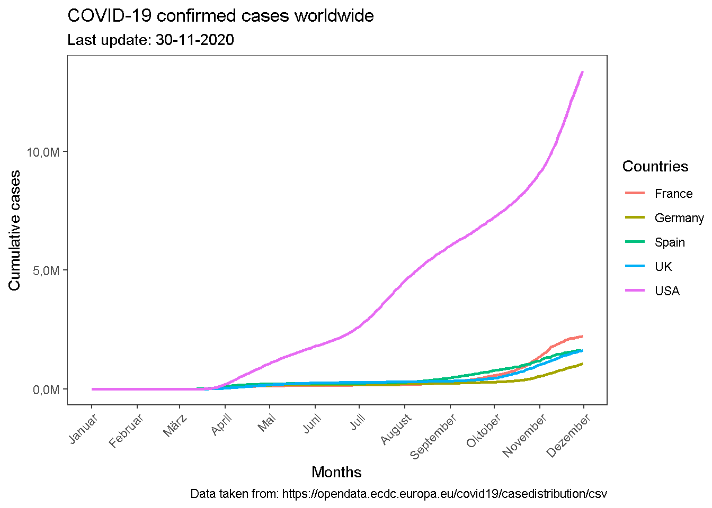

title: “REPORT OF DATA-SCIENCE CLASS” author: “Santiago Pulido Guerrero” date: “23-11-2020” output: html_document: toc: true toc_float: true collapsed: false number_sections: true toc_depth: 3 #code_folding: hide — -g
CHAPTER 2: INTRO TO THE TIDYVERSE
#CHALLENGE 1: ANALYSIS OF SALES BY PLACE AND YEAR
Last compiled: 2020-11-30
- Analysis of the sales by location and by year and location considering the 12 states of Germany and using bar plots.
# Data Science at TUHH ------------------------------------------------------
# SALES ANALYSIS ----
# 1.0 Load libraries ----
library(ggplot2)
library(tidyverse)
library(readxl)
library("writexl")
# 2.0 Importing Files ----
bikes_data <- read_excel(path = "D:/data-science/DS_Data-Science/00_data/01_bike_sales/01_raw_data/bikes.xlsx",sheet = NULL)
bikeshops_data <- read_excel(path = "D:/data-science/DS_Data-Science/00_data/01_bike_sales/01_raw_data/bikeshops.xlsx",sheet = NULL)
orderlines_data <- read_excel(path = "D:/data-science/DS_Data-Science/00_data/01_bike_sales/01_raw_data/orderlines.xlsx",sheet = NULL)
# 3.0 Joining Data ----
bikes_total_dataA = left_join(orderlines_data,bikes_data, by = c("product.id"="bike.id"))
bikes_total_dataB = left_join(orderlines_data,bikeshops_data, by = c("customer.id"="bikeshop.id"))
bike_orderlines_wrangled = left_join(bikes_total_dataA,bikes_total_dataB,by = NULL)
# 5.0 Wrangling Data ----
bike_orderlines_wrangled_tbl <- bike_orderlines_wrangled %>% separate(col = 'location',into = c("City","State"),sep = ",")%>%
mutate(total.price = price*quantity)%>%
select(order.id, contains("order"),contains("model"),contains("location"),price, quantity, total.price,everything()) %>%
rename(bikeshop = name) %>% set_names(names(.) %>% str_replace_all("\\.", "_"))
# 6.0 Business Insights ----
# 6.1 States with the highest revenue ----
# Step 1 - Manipulate
sales_by_loc_tbl <- bike_orderlines_wrangled_tbl %>% separate(col = "order_date",into = c("order_year","order_month","order_day"),sep = "-") %>%
group_by(State) %>% summarize(total_sales = sum(total_price))%>%
mutate(sales_in_euros = scales::dollar(total_sales, big.mark = ".",decimal.mark = ",",prefix = "",suffix = "\u20ac"))
sales_by_loc_year_tbl <- bike_orderlines_wrangled_tbl %>% separate(col = "order_date",into = c("order_year","order_month","order_day"),sep = "-") %>%
group_by(order_year,State) %>% summarize(total_sales = sum(total_price))%>%
mutate(sales_in_euros = scales::dollar(total_sales, big.mark = ".",decimal.mark = ",",prefix = "",suffix = "\u20ac"))
# Step 2 - Visualize
sales_by_loc_tbl %>% ggplot(aes(x = State,y = total_sales))+ theme(axis.text.x = element_text(angle = 45, hjust = 1)) +
geom_col(fill = "#2DC6D6") + geom_label(aes(label = sales_in_euros)) + geom_smooth(method = "lm", se = FALSE) +
scale_y_continuous(labels = scales::dollar_format(big.mark = ".",decimal.mark = ",",prefix = "",suffix = "\u20ac")) +
labs(
title = "Revenue by state",
subtitle = "Highest revenues",
x = "", # Override defaults for x and y
y = "Revenue in euros \u20ac"
)ggsave("sales_by_loc_tbl.png", height = 30, width = 35,units = "cm")
# 6.2 Sales by Year and Category 2 ----
# Step 2 - Visualize
sales_by_loc_year_tbl %>% ggplot(aes(x = order_year,y = total_sales, fill = State))+ theme(axis.text.x = element_text(angle = 90, hjust = 1)) +
geom_col() + facet_wrap(~ State) + scale_y_continuous(labels = scales::dollar_format(big.mark = ".",decimal.mark = ",",prefix = "",suffix = "\u20ac")) +
labs(
title = "Revenue by state",
subtitle = "Highest revenues",
fill = "Sales by states"
)
ggsave("sales_by_loc_year_tbl.png", height = 35, width = 35,units = "cm")
# 7.0 Writing Files ----
#install.packages("writexl")
library("writexl")
# 7.1 XLSX ----
sales_by_loc_tbl %>% write_xlsx("D:/data-science/DS_Data-Science/00_data/01_bike_sales/02_wrangled_data/sales_by_loc.xlsx")
sales_by_loc_year_tbl %>% write_xlsx("D:/data-science/DS_Data-Science/00_data/01_bike_sales/02_wrangled_data/sales_by_loc_year.xlsx")
# 7.2 CSV ----
sales_by_loc_tbl %>% write_csv("D:/data-science/DS_Data-Science/00_data/01_bike_sales/02_wrangled_data/sales_by_loc.csv")
sales_by_loc_year_tbl %>% write_csv("D:/data-science/DS_Data-Science/00_data/01_bike_sales/02_wrangled_data/sales_by_loc_year.csv")
# 7.3 RDS ----
sales_by_loc_tbl %>% write_rds("D:/data-science/DS_Data-Science/00_data/01_bike_sales/02_wrangled_data/sales_by_loc.rds")
sales_by_loc_year_tbl %>% write_rds("D:/data-science/DS_Data-Science/00_data/01_bike_sales/02_wrangled_data/sales_by_loc_year.rds")CHALLENGE 2:
API data acquisition
For the API data acquisition challenge, the OPENWEATHERMAP provider was selected. The code used was
## CHALLENGE 2.0
# SECTION 1.0
# 1.0 LIBRARIES ----
library(tidyverse) # Main Package - Loads dplyr, purrr, etc.
library(rvest) # HTML Hacking & Web Scraping
library(xopen) # Quickly opening URLs
library(jsonlite) # converts JSON files to R objects
library(glue) # concatenate strings
library(stringi) # character string/text processing
library(glue) # String interpolation
library(httr) # API GET function
library(rstudioapi) # Securing credentials
# 1.2 request data from source
city_name <- list("Hamburg","Tokio","Bogota")
Api_key <- "d7736dd80cd838bf45d50b696167e9f5"
city_wheather = list()
x = c()
n = 0;
for (i in city_name){
n = n + 1
resp <- GET(glue("https://api.openweathermap.org/data/2.5/weather?q={i}&units=metric&appid={Api_key}"));
x[n] <- content(resp, as = "text")
}# 1.3 Print data from the Source
map(x,print);## [1] "{\"coord\":{\"lon\":10,\"lat\":53.55},\"weather\":[{\"id\":804,\"main\":\"Clouds\",\"description\":\"overcast clouds\",\"icon\":\"04n\"}],\"base\":\"stations\",\"main\":{\"temp\":3.39,\"feels_like\":-0.39,\"temp_min\":2.78,\"temp_max\":5,\"pressure\":1017,\"humidity\":93},\"visibility\":9000,\"wind\":{\"speed\":3.1,\"deg\":150},\"clouds\":{\"all\":100},\"dt\":1606330698,\"sys\":{\"type\":1,\"id\":1263,\"country\":\"DE\",\"sunrise\":1606287862,\"sunset\":1606317012},\"timezone\":3600,\"id\":2911298,\"name\":\"Hamburg\",\"cod\":200}"
## [1] "{\"coord\":{\"lon\":139.69,\"lat\":35.69},\"weather\":[{\"id\":803,\"main\":\"Clouds\",\"description\":\"broken clouds\",\"icon\":\"04n\"}],\"base\":\"stations\",\"main\":{\"temp\":11.09,\"feels_like\":9.32,\"temp_min\":9.44,\"temp_max\":12,\"pressure\":1019,\"humidity\":93},\"visibility\":10000,\"wind\":{\"speed\":2.6,\"deg\":330},\"clouds\":{\"all\":75},\"dt\":1606330770,\"sys\":{\"type\":1,\"id\":8074,\"country\":\"JP\",\"sunrise\":1606339682,\"sunset\":1606375765},\"timezone\":32400,\"id\":1850147,\"name\":\"Tokyo\",\"cod\":200}"
## [1] "{\"coord\":{\"lon\":-74.08,\"lat\":4.61},\"weather\":[{\"id\":803,\"main\":\"Clouds\",\"description\":\"broken clouds\",\"icon\":\"04d\"}],\"base\":\"stations\",\"main\":{\"temp\":18.23,\"feels_like\":18.14,\"temp_min\":18.23,\"temp_max\":18.23,\"pressure\":1009,\"humidity\":65,\"sea_level\":1009,\"grnd_level\":751},\"visibility\":10000,\"wind\":{\"speed\":0.82,\"deg\":205},\"clouds\":{\"all\":75},\"dt\":1606330770,\"sys\":{\"country\":\"CO\",\"sunrise\":1606301230,\"sunset\":1606344012},\"timezone\":-18000,\"id\":3688689,\"name\":\"Bogotá\",\"cod\":200}"## [[1]]
## [1] "{\"coord\":{\"lon\":10,\"lat\":53.55},\"weather\":[{\"id\":804,\"main\":\"Clouds\",\"description\":\"overcast clouds\",\"icon\":\"04n\"}],\"base\":\"stations\",\"main\":{\"temp\":3.39,\"feels_like\":-0.39,\"temp_min\":2.78,\"temp_max\":5,\"pressure\":1017,\"humidity\":93},\"visibility\":9000,\"wind\":{\"speed\":3.1,\"deg\":150},\"clouds\":{\"all\":100},\"dt\":1606330698,\"sys\":{\"type\":1,\"id\":1263,\"country\":\"DE\",\"sunrise\":1606287862,\"sunset\":1606317012},\"timezone\":3600,\"id\":2911298,\"name\":\"Hamburg\",\"cod\":200}"
##
## [[2]]
## [1] "{\"coord\":{\"lon\":139.69,\"lat\":35.69},\"weather\":[{\"id\":803,\"main\":\"Clouds\",\"description\":\"broken clouds\",\"icon\":\"04n\"}],\"base\":\"stations\",\"main\":{\"temp\":11.09,\"feels_like\":9.32,\"temp_min\":9.44,\"temp_max\":12,\"pressure\":1019,\"humidity\":93},\"visibility\":10000,\"wind\":{\"speed\":2.6,\"deg\":330},\"clouds\":{\"all\":75},\"dt\":1606330770,\"sys\":{\"type\":1,\"id\":8074,\"country\":\"JP\",\"sunrise\":1606339682,\"sunset\":1606375765},\"timezone\":32400,\"id\":1850147,\"name\":\"Tokyo\",\"cod\":200}"
##
## [[3]]
## [1] "{\"coord\":{\"lon\":-74.08,\"lat\":4.61},\"weather\":[{\"id\":803,\"main\":\"Clouds\",\"description\":\"broken clouds\",\"icon\":\"04d\"}],\"base\":\"stations\",\"main\":{\"temp\":18.23,\"feels_like\":18.14,\"temp_min\":18.23,\"temp_max\":18.23,\"pressure\":1009,\"humidity\":65,\"sea_level\":1009,\"grnd_level\":751},\"visibility\":10000,\"wind\":{\"speed\":0.82,\"deg\":205},\"clouds\":{\"all\":75},\"dt\":1606330770,\"sys\":{\"country\":\"CO\",\"sunrise\":1606301230,\"sunset\":1606344012},\"timezone\":-18000,\"id\":3688689,\"name\":\"Bogotá\",\"cod\":200}"# API Key protection
alphavantage_api_url <- "https://www.alphavantage.co/query"
ticker <- "WDI.DE"
GET(alphavantage_api_url, query = list('function' = "GLOBAL_QUOTE",
symbol = ticker,
apikey = Sys.getenv("MyPersonalToken"))
)## Response [https://www.alphavantage.co/query?function=GLOBAL_QUOTE&symbol=WDI.DE&apikey=]
## Date: 2020-11-25 19:07
## Status: 200
## Content-Type: application/json
## Size: 189 B
## {
## "Error Message": "the parameter apikey is invalid or missing. Please clai...Scraping information
The selected competitor website was https://www.rosebikes.de/. The code produced is
# SECTION 2.0
# 2.0 LIBRARIES
library(tidyverse) # Main Package - Loads dplyr, purrr, etc.
library(rvest) # HTML Hacking & Web Scraping
library(xopen) # Quickly opening URLs
library(jsonlite) # converts JSON files to R objects
library(glue) # concatenate strings
library(stringi) # character string/text processing
library(httr) # include functions
library(rstudioapi)# Securing credentials
# 2.1 Collection of products features
url_home <- "https://www.rosebikes.de/fahrräder/mtb"
xopen(url_home)## Running cmd /c start "\"\"" /b "https://www.rosebikes.de/fahrräder/mtb"html_home <- read_html(url_home)
mtb_bikes_family <- html_home %>%
html_nodes(css = ".catalog-category-bikes__title-text") %>% html_text() %>%
enframe(name = "position",value = "Family_class") %>% mutate( family_class = str_glue("#MTB"))
mtb_bikes_price <- html_home %>% html_nodes(css = ".catalog-category-bikes__price-title") %>% html_text() %>%
enframe(name = "position",value = "Price")
mtb_bikes_tbl <- mtb_bikes_family %>% left_join(mtb_bikes_price, by = c("position"="position"))
# Printing the data
mtb_bikes_tbl %>% print()## # A tibble: 9 x 4
## position Family_class family_class Price
## <int> <chr> <glue> <chr>
## 1 1 "\nGROUND CONTROL\n" #MTB "\nab 1.699,00 €\n"
## 2 2 "\nROOT MILLER\n" #MTB "\nab 1.999,00 €\n"
## 3 3 "\nPIKES PEAK\n" #MTB "\nab 3.099,00 €\n"
## 4 4 "\nTHE BRUCE\n" #MTB "\n"
## 5 5 "\nCOUNT SOLO\n" #MTB "\n"
## 6 6 "\nPSYCHO PATH\n" #MTB "\nab 1.849,00 €\n"
## 7 7 "\nTHRILL HILL\n" #MTB "\nab 2.599,00 €\n"
## 8 8 "\nTHRILL HILL TRAIL\n" #MTB "\nab 2.899,00 €\n"
## 9 9 "\nSOUL FIRE\n" #MTB "\nab 2.149,00 €\n"alphavantage_api_url <- "https://www.alphavantage.co/query"
ticker <- "WDI.DE"
GET(alphavantage_api_url, query = list('function' = "GLOBAL_QUOTE",
symbol = ticker,
apikey = Sys.getenv("MyPersonalToken"))
)## Response [https://www.alphavantage.co/query?function=GLOBAL_QUOTE&symbol=WDI.DE&apikey=]
## Date: 2020-11-25 19:07
## Status: 200
## Content-Type: application/json
## Size: 189 B
## {
## "Error Message": "the parameter apikey is invalid or missing. Please clai...CHALLENGE 3
Part 1
The top ten companies with the most patents
# 1.0 libraries
library(vroom)
library(readxl)
library("writexl")
library(tidyr)
library(purrr)
library("stringr")
library(dplyr)
library(data.table)
# Tidyverse
library(tidyverse)
# 2.0 import data
col_assignee <- list(
id = col_character(),
type = col_character(),
name_first = col_character(),
name_last = col_character(),
organization = col_character()
)
col_patent_assignee <- list(
patent_id = col_character(),
assignee_id = col_character(),
location_id = col_character()
)
library(vroom)
col_types <- list(
id = col_character(),
type = col_character(),
number = col_character(),
country = col_character(),
date = col_date("%Y-%m-%d"),
abstract = col_character(),
title = col_character(),
kind = col_character(),
num_claims = col_double(),
filename = col_character(),
withdrawn = col_double()
)
uspc_tbl <- list(
uuid = col_character(),
pat_id = col_character(),
mainclass_id = col_character(),
subclass_id = col_character(),
sequence = col_character()
)
patent_tbl <- vroom(
file = "patent.tsv",
delim = "\t",
col_types = list(id = col_skip(),type = col_skip(),abstract = col_skip(),withdrawn = col_skip()),
na = c("", "NA", "NULL")
)
assignee_tbl <- vroom(
file = "assignee.tsv",
delim = "\t",
col_types = list(name_first = col_skip(),name_last = col_skip()),
na = c("", "NA", "NULL")
)
patent_assignee_tbl <- vroom(
file = "patent_assignee.tsv",
delim = "\t",
col_types = col_patent_assignee,
na = c("", "NA", "NULL")
)
uspc_tbl <- vroom(
file = "uspc.tsv",
delim = "\t",
col_types = list(uuid = col_skip(), subclass_id = col_skip()),
na = c("", "NA", "NULL")
)
class(uspc_tbl)
setDT(uspc_tbl)
class(patent_tbl)
setDT(patent_tbl)
class(assignee_tbl)
setDT(assignee_tbl)
class(patent_assignee_tbl)
setDT(patent_assignee_tbl)
## Challenge 3.1
### 3.0 Data Wranggling
patent_assignee_tbl <- patent_assignee_tbl %>% select(patent_id, assignee_id, location_id) %>% rename(pat_id = patent_id,
id = assignee_id,
Loc_id = location_id)
complete_patent_tbl <- merge(x = patent_assignee_tbl, y = assignee_tbl, by = "id",all.x = TRUE, all.y = TRUE)
### filtering Critirea
## Categories
### 2 US Company or Corporation
### 4 US individual
### 6 US Federal government
### 8 US County Government
### 9 US State Government
filtered_data <- complete_patent_tbl %>% select(type,organization) %>% filter((type %% 2 == 0)|(type == 9))
num_patents_by_co <- filtered_data %>% group_by(organization) %>% count() %>% arrange(desc(n))
num_patents_by_co %>% head(n=10)library(readxl)
num_patents_by_comp <- read_csv("num_patents_by_com.csv")
num_patents_by_comp ## # A tibble: 10 x 2
## organization n
## <chr> <dbl>
## 1 International Business Machines Corporation 139092
## 2 <NA> 72951
## 3 General Electric Company 47122
## 4 Intel Corporation 42157
## 5 Hewlett-Packard Development Company, L.P. 35573
## 6 Microsoft Corporation 30086
## 7 Micron Technology, Inc. 28001
## 8 QUALCOMM Incorporated 24703
## 9 Texas Instruments Incorporated 24182
## 10 Xerox Corporation 23174## Challenge 3.2
patent_assignee_tbl <- complete_patent_tbl %>% select(id,pat_id,Loc_id,type,organization)%>% rename(id = id,
number = pat_id,
loc_id = Loc_id,
type = type,
org = organization)
merged_patent_tbl <- merge(x = patent_tbl, y = patent_assignee_tbl, by = "number",all.x = TRUE, all.y = TRUE)
filtered_patent_tbl <- merged_patent_tbl %>% select(number,country,date,type,org) %>% filter((type %% 2 == 0)|(type == 9))
filtered_patent_tbl <- filtered_patent_tbl %>% select(number,country,date,type,org) %>% filter(!is.na(date))
ru_patent_tbl <- filtered_patent_tbl %>% select(number,country,date,org) %>% separate(col = date,
into = c("year","month","day"),
sep = '-',remove = FALSE)
ru_patent_tbl <- ru_patent_tbl %>% select(-date)
ru_patent_tbl <- ru_patent_tbl %>% select(number,country,year,org) %>% filter(year == 2019)
patents_by_company_in_2019 <- ru_patent_tbl %>% group_by(org,year) %>% count() %>% arrange(desc(n))
patents_by_company_in_2019 %>% head(n=10)patents_by_company_2019 <- read_csv("patents_by_company_2019.csv")
patents_by_company_2019 ## # A tibble: 10 x 3
## org year n
## <chr> <dbl> <dbl>
## 1 International Business Machines Corporation 2019 9265
## 2 Intel Corporation 2019 3526
## 3 Microsoft Technology Licensing, LLC 2019 3106
## 4 Apple Inc. 2019 2817
## 5 Ford Global Technologies, LLC 2019 2624
## 6 Amazon Technologies, Inc. 2019 2533
## 7 QUALCOMM Incorporated 2019 2359
## 8 Google Inc. 2019 2290
## 9 General Electric Company 2019 1860
## 10 Hewlett-Packard Development Company, L.P. 2019 1589complete_upatent_tbl <- complete_patent_tbl %>% select(id,pat_id,Loc_id,type,organization) %>% filter(!is.na(pat_id)) %>% arrange(desc(pat_id))
uspc_tbl <- uspc_tbl %>% select(patent_id,mainclass_id,sequence) %>% rename(pat_id = patent_id,
mclass = mainclass_id,
sqc = sequence)
complete_upatent_tbl <- merge(x = complete_upatent_tbl, y = uspc_tbl, by = "pat_id",all.x = TRUE, all.y = TRUE) %>% filter(!is.na(mclass))
complete_upatent_tbl <- complete_upatent_tbl %>% filter(!is.na(organization))
filtered_patent_tbl <- complete_upatent_tbl %>% group_by(pat_id,organization,mclass) %>% count() %>% arrange(desc(n))
top_10_companies <- filtered_patent_tbl %>% group_by(pat_id,organization) %>% count() %>% arrange(desc(n))
top_10_org <- top_10_companies %>% group_by(organization) %>% count() %>% arrange(desc(n)) %>% head(n=10)
top_uspto <- merge(x = top_10_org, y = filtered_patent_tbl, by = "organization",all.x = TRUE, all.y = TRUE)
top_5_uspto <- top_uspto %>% select(organization, n.x, pat_id, mclass) %>% filter(!is.na(n.x)) %>% arrange(desc(mclass))
top_5_uspto <- top_5_uspto %>% group_by(mclass) %>% count() %>% arrange(desc(n))
top_5_uspto %>% head(n = 5) %>% glimpse()
## filtering Critirea
## Step 1:
### a) Trew away the na.rows of organization and mclass at the frist two command lines
### b) Counted the number of times a patent was assigned to an organization, considering the mainclass
### c) Counted the number of times an organization was awarded a patent
### d) Extracted the top ten companies with most patents in top_10_org
### e) Filtered (using merge) the top ten companies in the filtered_patent_tbl to get the the mainclass of the top tehn companies
### f) Finally, count the number of times mainclasses appears from the top ten companies
### h) Got the top five USPTO tech mainclassestop_5_uspto <- read_csv("top_5_uspto.csv")
top_5_uspto ## # A tibble: 5 x 2
## mclass n
## <dbl> <dbl>
## 1 257 29872
## 2 438 19543
## 3 358 17228
## 4 348 16300
## 5 709 16058Challenge 4
COVID confirmed cases
# Challenge 1
# Challenge 1
# 1.0 Libraries
library(maps)
library(dplyr)
library(tidyverse)
library(lubridate)
library(readxl)
library(ggplot2)
# 2.0 Data acquisition
covid_data_tbl <- read_csv("https://opendata.ecdc.europa.eu/covid19/casedistribution/csv")
# 3.0 Data manipulation
cases_in_2020 <- covid_data_tbl %>% select(dateRep,year,month,cases,deaths,countriesAndTerritories,continentExp,popData2019) %>%
mutate(across(countriesAndTerritories, str_replace_all, "_", " ")) %>%
mutate(countriesAndTerritories = case_when(
countriesAndTerritories == "United Kingdom" ~ "UK",
countriesAndTerritories == "United States of America" ~ "USA",
countriesAndTerritories == "Czechia" ~ "Czech Republic",
TRUE ~ countriesAndTerritories
))
cases_by_dmonth_2020 <- cases_in_2020 %>% select(dateRep,month,year,cases,countriesAndTerritories) %>%
mutate(dateRep = dmy(dateRep)) %>% filter(year %in% "2020" & countriesAndTerritories %in% c("Germany","France","UK","Spain","USA")) %>%
arrange((dateRep))
cases_by_month_2020 <- cases_by_dmonth_2020 %>% group_by(countriesAndTerritories) %>%
mutate(cumulative_cases = cumsum(cases)) %>% ungroup()
cases_by_month_2020 %>% ggplot(aes(x = dateRep,y = cumulative_cases,size = total_cases)) +
geom_line(aes(color = countriesAndTerritories), size = 1.0) +
scale_x_date(breaks = "1 month", date_labels = "%B") +
scale_y_continuous(labels = scales::number_format(scale = 1/1e6, big.mark = ".", decimal.mark = ",", suffix = "M"))+
theme_test()+theme(axis.text.x = element_text(angle = 45, hjust = 1))+
labs(
title = "COVID-19 confirmed cases worldwide",
subtitle = "Last update: 30-11-2020",
caption = "Data taken from: https://opendata.ecdc.europa.eu/covid19/casedistribution/csv",
x = "Months",
y = "Cumulative cases",
color = "Countries"
) 
map_cases_2020 <- cases_in_2020 %>% select(dateRep,month,year,cases,countriesAndTerritories,everything()) %>%
mutate(dateRep = dmy(dateRep)) %>% filter(year %in% "2020") %>% arrange((dateRep))
map_cases_2020 <- map_cases_2020 %>% select(everything()) %>% rename(
date = dateRep,
month = month,
year = year,
cases = cases,
region = countriesAndTerritories,
continents = continentExp,
population = popData2019
)
map_cases_2020 <- map_cases_2020 %>% select(everything()) %>% group_by(year,region,population) %>% summarize(mortality = sum(deaths)) %>% ungroup()
world <- map_data("world")
covid_map_data_2020 <- merge(map_cases_2020,world, by = "region")
covid_map_data_2020 <- covid_map_data_2020 %>% mutate(rate_mortality = mortality/population)
covid_map_data_2020 %>% ggplot(aes(long, lat, group = group)) +
geom_map(aes(map_id = region,fill = rate_mortality),map = world) +
scale_fill_viridis_c(option = "C") +
labs(
title = "Confirmed COVID-19 deaths relative to the size of the population",
subtitle = "Last update: 30-11-2020",
caption = "Data taken from: https://opendata.ecdc.europa.eu/covid19/casedistribution/csv",
x = "Longitude",
y = "Latitude",
color = "Countries"
) + theme_test()When you knit this R Markdown document, you will see that the histogram is printed to the page, along with the R code. This document can be set up to hide the R code in the webpage, just delete the comment (hashtag) from the cold folding option in the yaml header up top. For purposes of letting yourself see the code, and me see the code, best to keep it the way that it is. You’ll learn that all of these things and more can be customized in each R code block.